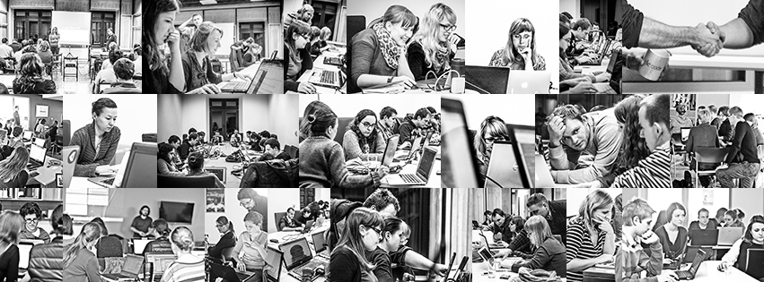

<section>
  <div class="row small-collapse large-uncollapse">
    <div class="large-8 columns">
      <h1>O nas</h1>
      <p>
        Koło naukowe Epicentrum powstało na przełomie marca i kwietnia 2006 roku z inicjatywy grupy studentów drugiego roku kierunku Kulturoznawstwo o specjalności Elektroniczne Przetwarzanie Informacji. Obecnie kierunek ten zmienił swoją nazwę i korzysta z tytułu samej specjalności.
      </p>
      
      <p>
        Pierwszym opiekunem naukowym koła został prof. dr hab. Wiesław Lubaszewski, to właśnie pod jego pieczą stanowisko prezesa koła sprawowała Joanna Bukowska-Palarz. Pozostałymi członkami zarządu i współzałożycielami koła byli: Hanna Kułakowska, Marcin Lewandowski, Maciej Dubiński i Jadwiga Sitnicka.
      </p>

      <h1>Cele koła</h1>
      <ul id="goals">
        <li>poszerzanie wiedzy i umiejętności studentów</li>
        <li>pomoc w nauce i rozwój form samokształcenia</li>
        <li>rozwijanie zainteresowań naukowych studentów</li>
        <li>wdrażanie studentów do pracy naukowej i badawczej</li>
        <li>zwiększanie możliwości dostępu do nowych technologii</li>
      </ul>

      <h1>Sekcje</h1>
      <p>
        Koło opiera swoją działalność na sekcjach. Każda z nich jest powoływana do zrealizowania konkretnego zadania. Działalność sekcji może mieć charakter długoterminowy w przypadku projektów realizowanych cyklicznie, lub jednorazowy, wtedy zostaje ona rozwiązana bezpośrednio po zakończeniu projektu. Konsultantem naukowym danej sekcji może być pracownik naukowy lub doktorant dowolnej uczelni.
      </p>
    </div>

    <div class="large-4 columns">
      <h1>Zarząd</h1>
      <p>
        <b>Opiekun naukowy koła</b><br>
        mgr inż. Aleksander Smywiński-Pohl<br><br>

        <b>Prezes</b><br>
        Damian Kałwa<br>
        <a href="mailto:dkalwa@gmail.com">dkalwa@gmail.com</a><br><br>

        <b>Pełnomocnik ds. organizacyjnych</b><br>
        Kinga Cepielik<br>
        <a href="mailto:kingacepielik@gmail.com">kingacepielik@gmail.com</a><br><br>

        <b>Pełnomocnik ds. naukowych</b><br>
        Ryszard Czernecki<br>
        <a href="mailto:raczernecki@gmail.com">raczernecki@gmail.com</a><br><br>

        <b>Sekretarz</b><br>
        Julia Pukalska<br>
        <a href="mailto:jpukalska@gmail.com">jpukalska@gmail.com</a><br><br>

        <b>Skarbnik</b><br>
        Anna Bogusz<br>
        <a href="mailto:ania.bogusz@student.uj.edu.pl">ania.bogusz@student.uj.edu.pl</a>
      </p>

      <h1>Członkowie</h1>
      <ol id="members">
        <li>Agata Redyk</li>
        <li>Agnieszka Rączka</li>
        <li>Anna Bogusz</li>
        <li>Anna Wróbel</li>
        <li>Damian Kałwa</li>
        <li>Dorota Kuśmierz</li>
        <li>Grzesiek Stefański</li>
        <li>Iwona Guguła</li>
        <li>Joanna Jadach</li>
        <li>Joanna Sierant</li>
        <li>Jola Klima</li>
        <li>Julia Pukalska</li>
        <li>Justyna Rząca</li>
        <li>Karolina Piekarz</li>
        <li>Kasia Sordyl</li>
        <li>Kinga Cepielik</li>
        <li>Rafał Trzop</li>
        <li>Ryszard Czernecki</li>
        <li>Urszula Witkowicz</li>
        <li>Zuza Drohomirecka</li>
      </ol>
    </div>
  </div>
</section>